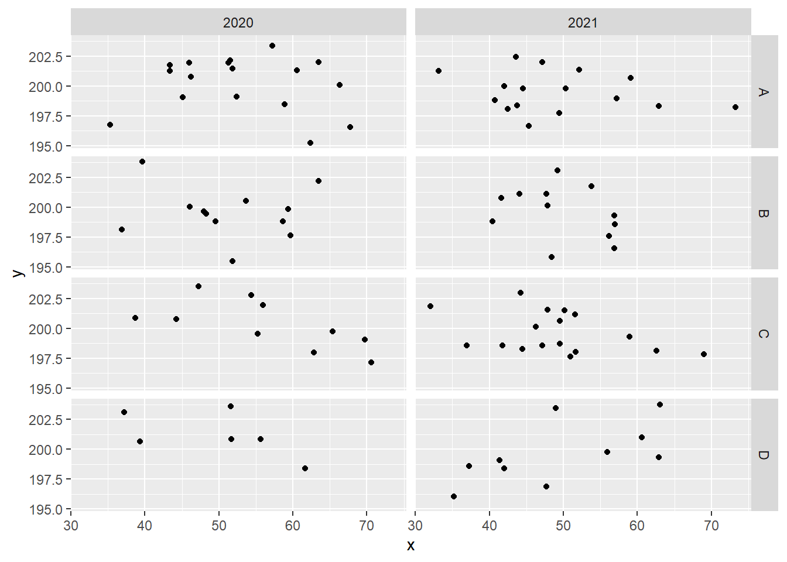
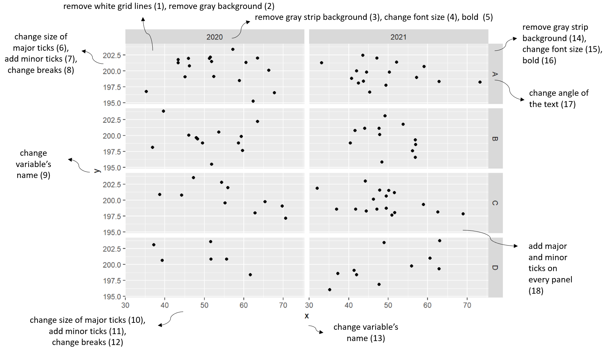
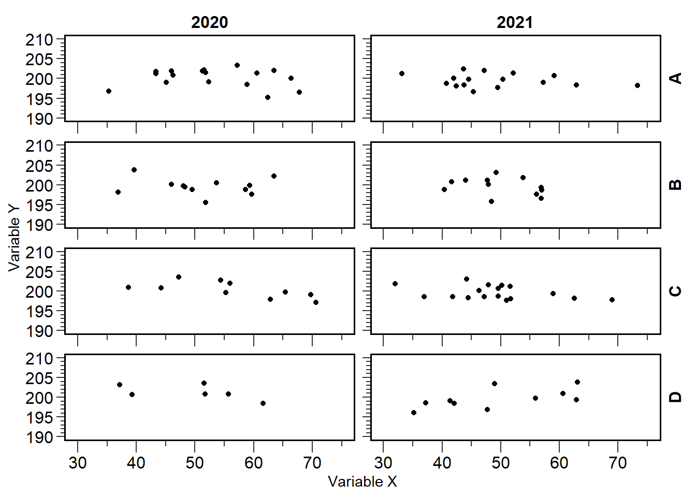

# library
library(tidyverse)
library(ggh4x)
set.seed(4)
x <- rnorm(100, 50, 10)
y <- rnorm(100, 200, 2)
group <- sample(LETTERS[1:4], size = 100, replace = T)
year <- sample(c(2020:2021), size = 100, replace = T)
df <- data.frame(x,y,group,year)Text text text
My fake data
Standard ggplot
df %>%
ggplot(aes(x,y)) +
geom_point() +
facet_grid(group~year)
Common changes to make
So I thought of some common changes considering a figure with panels.

New figure
df %>%
ggplot(aes(x,y)) +
geom_point() +
facet_grid2(group~year, axes = "all", remove_labels = "all") + # change 18
scale_x_continuous(breaks = seq(30,75,10), # change 12
minor_breaks = seq(30,75,5), # change 11
guide = "axis_minor", # change 11
limits = c(30,75)) +
scale_y_continuous(breaks = seq(190,210,5), # change 8
minor_breaks = seq(190,210,1), # change 7
guide = "axis_minor", # change 7
limits = c(190,210)) +
# change 19
theme(panel.border = element_rect(linewidth = 1, colour = "black", fill = NA))+
# size of axis text
theme(axis.text =element_text(face="plain",size=12, colour="black"))+
theme(panel.background = element_rect(fill = "transparent"),
plot.background = element_rect(fill = "white", color = NA)) + # change 2
# change 15 and 16
theme(strip.text = element_text(size = 12, color = "black", face = "bold")) +
theme(strip.text.y = element_text(angle = 90)) + # change 17
theme(strip.background = element_blank()) + # change 14
theme(axis.ticks.length.x = unit(0.3, "cm"), # change 10
axis.ticks.length.y = unit(0.2, "cm"), # change 10
ggh4x.axis.ticks.length.minor = rel(0.5)) + # size of minor ticks
labs(y = "Variable Y", x = "Variable X") # change 9 and 13
In case I don’t remember any element, I usually go check this app on GGPLOT2TOR+.
Note
In this case, the groups are represented by only one letter (A, B, C and D), so I could have changed the angle, but in case it’s a word, I prefer angle = 90.